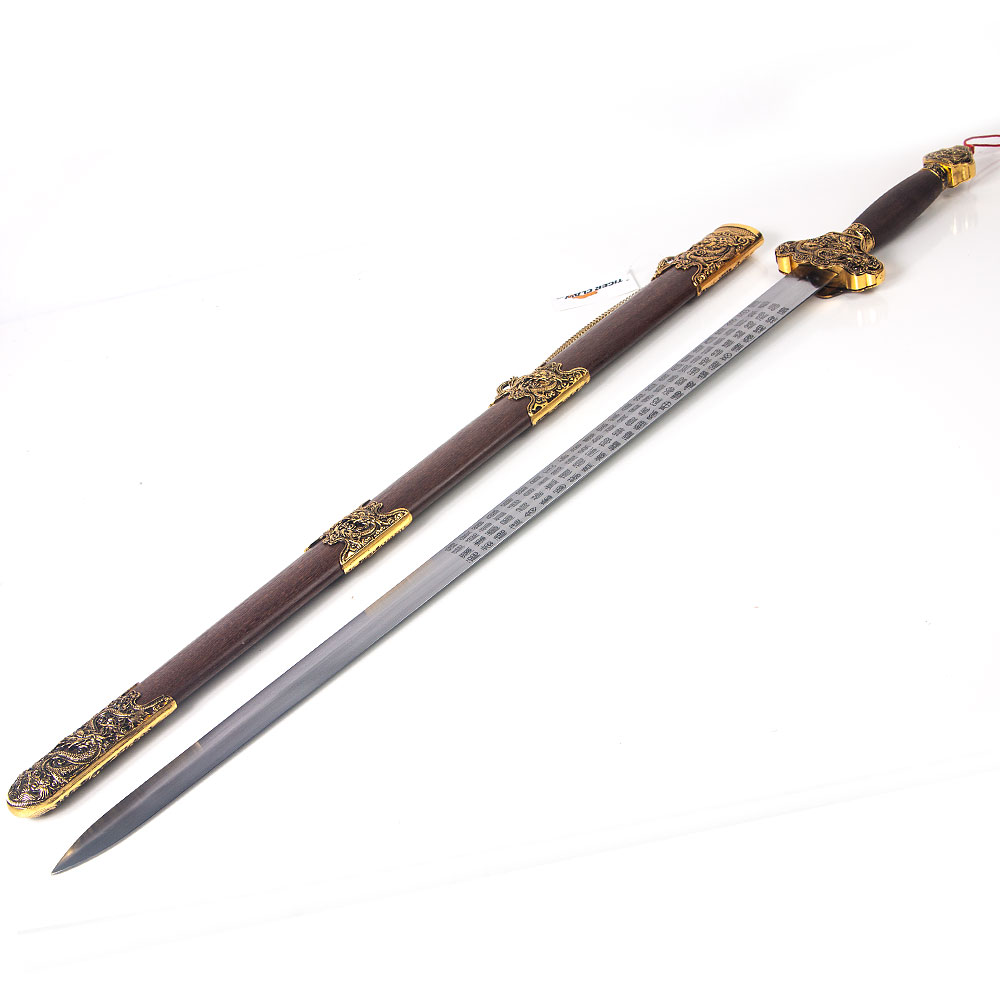
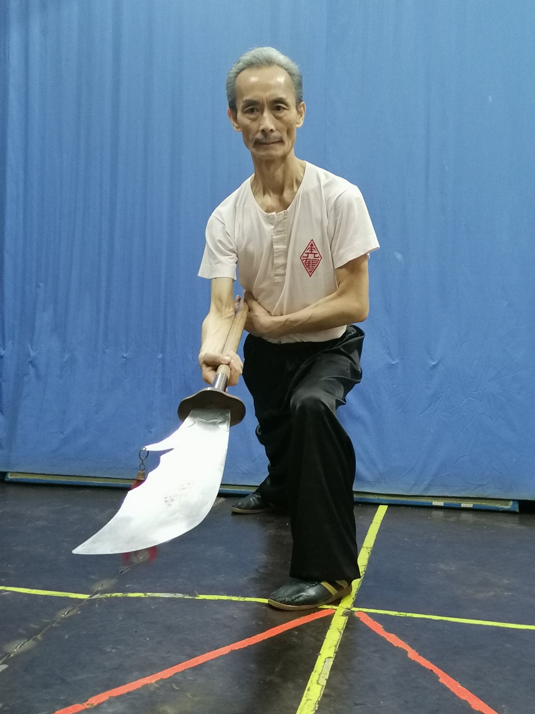

A espada chinesa, ou jian, é uma arma de uma mão com uma lâmina de tamanho médio e com dois gumes. Essa arma é o símbolo máximo de nobreza e habilidade marcial. Sua capacidade de encantar e fascinar o olhar humano se deve à sua técnica rebuscada.
Essa arma surgiu na época em que os Zhou (1100-771 a.C.) governavam. As primeiras espadas chinesas eram feitas de bronze. Sua técnica se baseia nos movimentos circulares para a defesa; cortes e estocadas precisas para o ataque.
Porém, por volta do ano 100 a.C. (na época da dinastia Han do Oeste) e espada de dois gumes cai em desuso. Apesar de toda a admiração que seus movimentos graciosos suscitavam nas pessoas, o seu uso militar foi diminuindo. As lâminas, relativamente finas, podiam se quebrar facilmente nas batalhas. Além do mais, ela não era de fácil aprendizado, exigindo muito treino e anos de prática para se tornar realmente efetiva.
Contudo, sua importância simbólica permaneceu na cultura chinesa. Carregar uma espada era um sinal de cultura e poder, ilustrando bem o ideal confuciano de unir a vida marcial com a vida intelectual. Por esse motivo a espada fez parte da indumentária dos oficiais da corte por vários séculos.
O nome Guan Dao é uma homenagem ao seu usuário mais famoso, o General Guan Yu (關羽) (160–219) um herói real também famoso como personagem do épico chinês "Os Três Reinos", escrito por Luo Guanzhong no século XIV. Ele é uma das figuras das artes marciais mais significativas, lendário "santo protetor" das artes marciais. É honrado em muitos altares ancestrais, e nenhuma escola de kung fu pode ser considerada "tradicional" sem a presença do General Guan.
A lâmina do Guan dao é anormalmente larga, com um gancho atrás. Esse gancho é costumeiramente adornado com crina de cavalo avermelhada. É uma arma difícil de manipular quando montado como arma de bastão. Assim, o Guan Dao é projetado melhor para golpes grandes, poderosos, como do tipo que corta cabeças.
Na China, existem alguns que são pesados ao extremo. Relatos afirmam que a Kwan Dao do General Kwan Yu pesava em torno de 50Kg. Isso requer força extrema e profunda habilidade no kung fu.
O Kwan dao representa o espírito do kung fu por seu grande peso e por sua origem histórica lendária, é venerado como arma de mestre e encarna a essência da prática com armas chinesas tradicionais.
